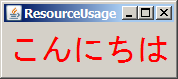

このページの内容に対応するソースコードは、s2swing-tutorialアーカイブのresourceパッケージ以下にあります。
S2Swingでは、コンポーネントの表示テキストやメッセージなどのリソースをソースコード中にハードコーディングする代わりに、 propertiesファイルに記述しておき、実行時にインジェクションすることができます。このようにリソースファイルを外出ししておくことによって、リソースの一元管理や国際化が容易になります。
propertiesファイル中に記述したマルチバイト文字は、native2asciiツールを使用してUnicode表記(\udddd)に変換する必要があります。 Eclipseは、デフォルトではこの作業を行ってくれません。EclipseでS2Swingアプリケーションの開発を行う場合は、マルチバイト文字変換の手間を省くため、 以下のプロパティエディタプラグインの導入を強く推奨します。
リソースファイルの名前は、インジェクション対象のクラス名に基づいて以下のように決定されます。
[対象クラスのパッケージ]/resources/[対象クラス名]{ロケール}.properties
例えば、com.example.ExampleFrameというクラスを対象とするリソースファイルの名前は、com/example/resources/ExampleFrame.propertiesとなります。
それでは早速、リソースファイルを使ったアプリケーションを作成してみましょう。 フレームにラベルを表示し、そのテキストやフォントをリソースファイルで指定することにします。
Hello Worldのときと同様、まずフレームのクラスを作成します。ただし、今回はJFrameクラスではなく、S2Frameクラスを継承します。
package resource;
import java.awt.Container;
import java.awt.FlowLayout;
import javax.swing.JLabel;
import org.seasar.swing.component.S2Frame;
public class ResourceUsageFrame extends S2Frame {
private static final long serialVersionUID = 1L;
private JLabel messageLabel = new JLabel();
public void initialize() {
setDefaultCloseOperation(EXIT_ON_CLOSE);
Container c = getContentPane();
c.setLayout(new FlowLayout());
c.add(messageLabel);
}
}
HelloWorldFrameクラスではコンストラクタで画面を構築していましたが、S2Frameの継承クラスでは代わりにinitialize()メソッドを使用します。 messageLabelという名前のフィールドでラベルを作成し、特にプロパティの設定をせず、そのまま画面に追加しています。
ResourceUsageFrameクラスの作成が終わったら、前回と同じ要領で、アプリケーションクラスとなるResourceUsageクラスを作成します。
次に、このフレームに対応するリソースファイルを作成します。ここでは、フレームのクラス名はresource.ResourceUsageFrameですので、 リソースファイルの名前は上の規約に従い、resource/resources/ResourceUsageFrame.propertiesとなります。
title = ResourceUsage messageLabel.text = こんにちは messageLabel.font = Dialog-PLAIN-32 messageLabel.foreground = #FF0000
このように、[コンポーネントのフィールド名].[プロパティ名]の書式で、コンポーネントのプロパティを指定することができます。
リソースインジェクションは、Swing Application Framework自身が持つ機能です。 本来、リソースインジェクションでは、コンポーネント名の明示的な設定が必要です。 S2Swingの役割は、フィールド名からコンポーネント名（今回の例では"messageLabel"）を自動的に設定することです。
S2Swingでは、アプリケーションクラスのリソースファイルに、アプリケーションの基本情報を記述することになっています。 resource/resources/ResourceUsage.propertiesファイルを、以下のように作成しておきましょう。 この記述がなくてもアプリケーションの実行は可能ですが、警告が表示されます。
Application.id = ResourceUsage Application.title = Resource Usage Application Application.version = 1.0 Application.vendor = Seasar Project Application.vendorId = S2Swing Application.homepage = http://s2swing.sandbox.seasar.org/ Application.description = リソースファイルの使用例です。 Application.lookAndFeel = system
では、ResourceUsageアプリケーションを実行してみましょう。

リソースファイルの指定が、正しくラベルに反映されていますね。